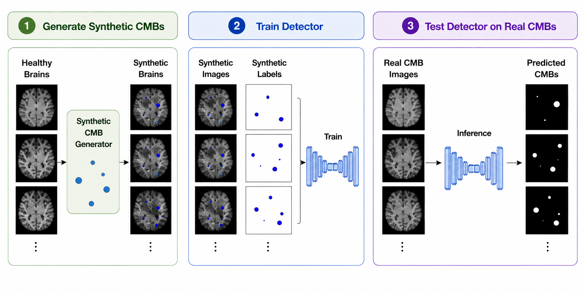
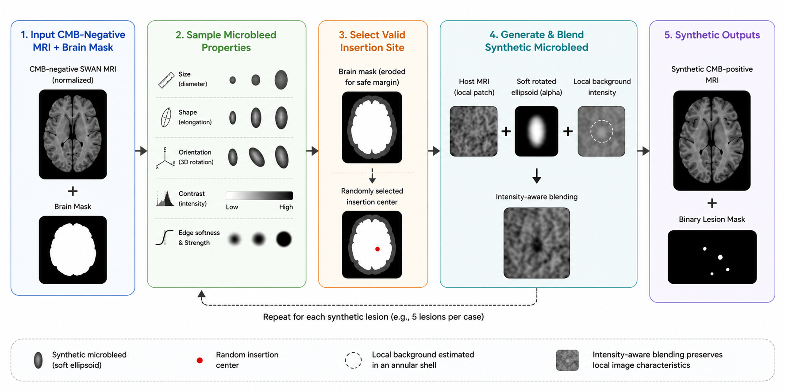
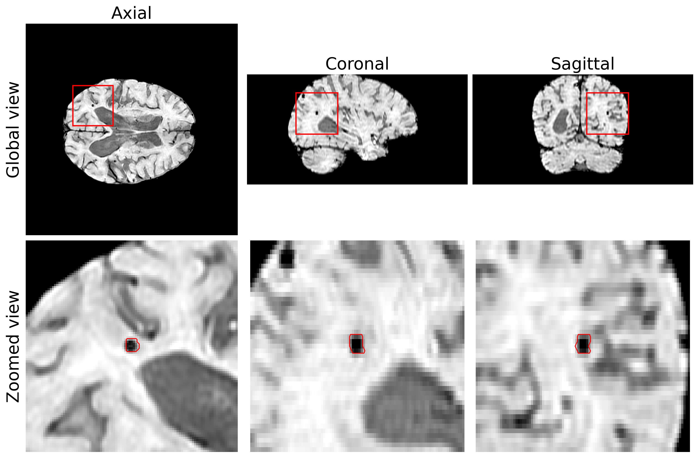
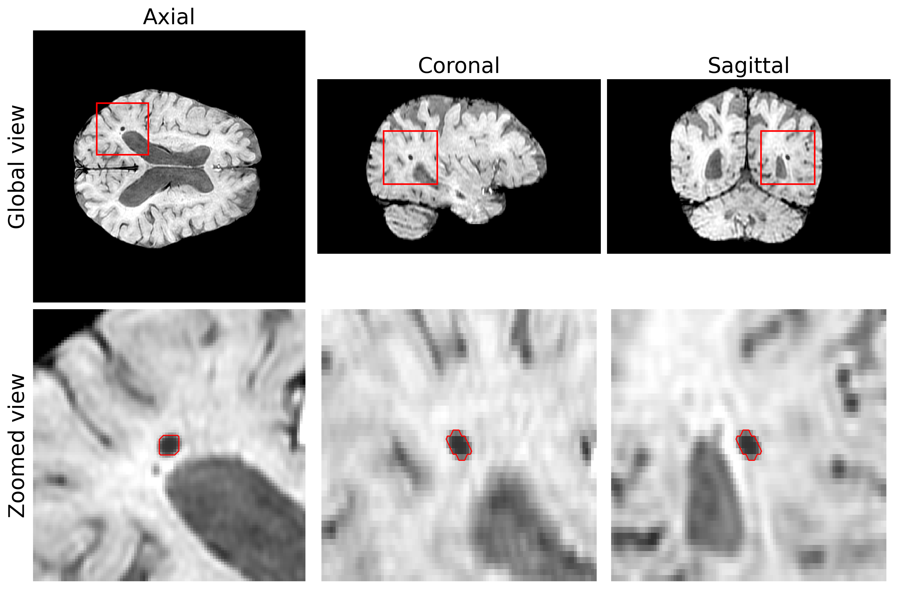
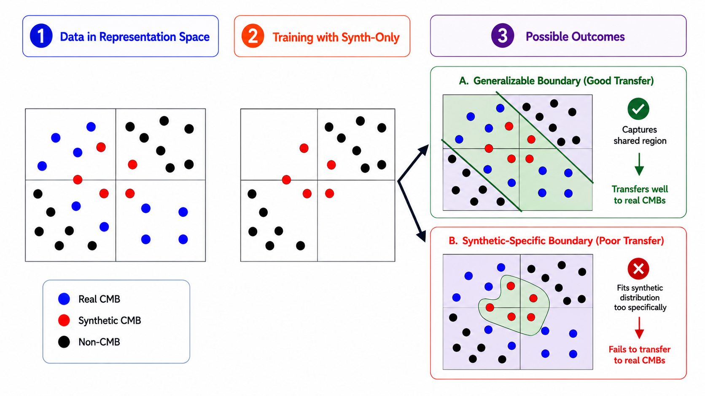

Synthetic supervision works.
Models trained without real positive annotations can still transfer substantially to real CMB detection.
Medical Imaging · Synthetic Data · Deep Learning
Can synthetic cerebral microbleeds teach a detector to recognize real ones?
We generate controllable synthetic cerebral microbleeds on real CMB-negative SWAN MRI and study how well detectors trained on them transfer to real clinical lesions.

01
Synthetic lesions are parameterized by size, shape, orientation, signal contrast, and boundary appearance, then inserted into real CMB-negative SWAN images.



03
A MONAI 3D U-Net trained exclusively on synthetic lesions retained substantial detection performance when evaluated on real CMBs.
04
Synthetic-to-real transfer differed substantially between the two evaluated segmentation frameworks.
Lesion sensitivity
with synthetic-only training
Lesion sensitivity
with synthetic-only training
05
Successful transfer may depend not only on the realism of synthetic lesions, but also on how the downstream model learns from the synthetic distribution.

Our experiments demonstrate framework-dependent transfer, but do not identify the specific mechanism responsible for the difference.
06
Models trained without real positive annotations can still transfer substantially to real CMB detection.
Real-trained models consistently outperformed synthetic-trained models across the evaluated data scales.
Synthetic data transferred substantially with MONAI but poorly with nnU-Net.
Read the full study or explore the implementation and reproducibility pipeline.